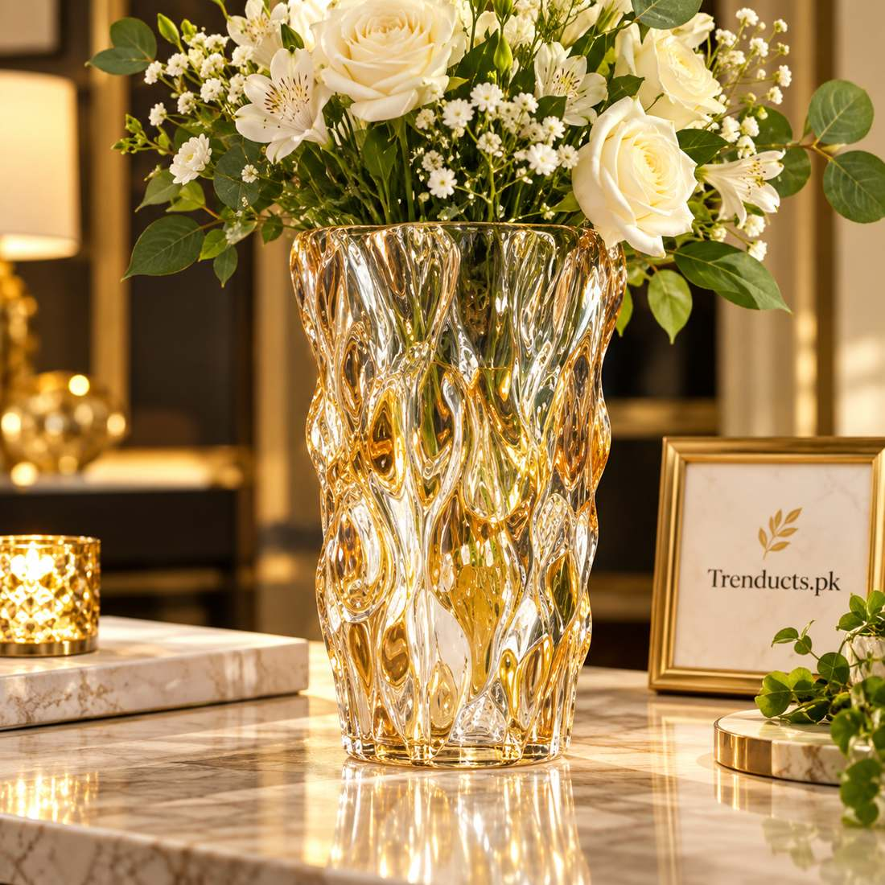
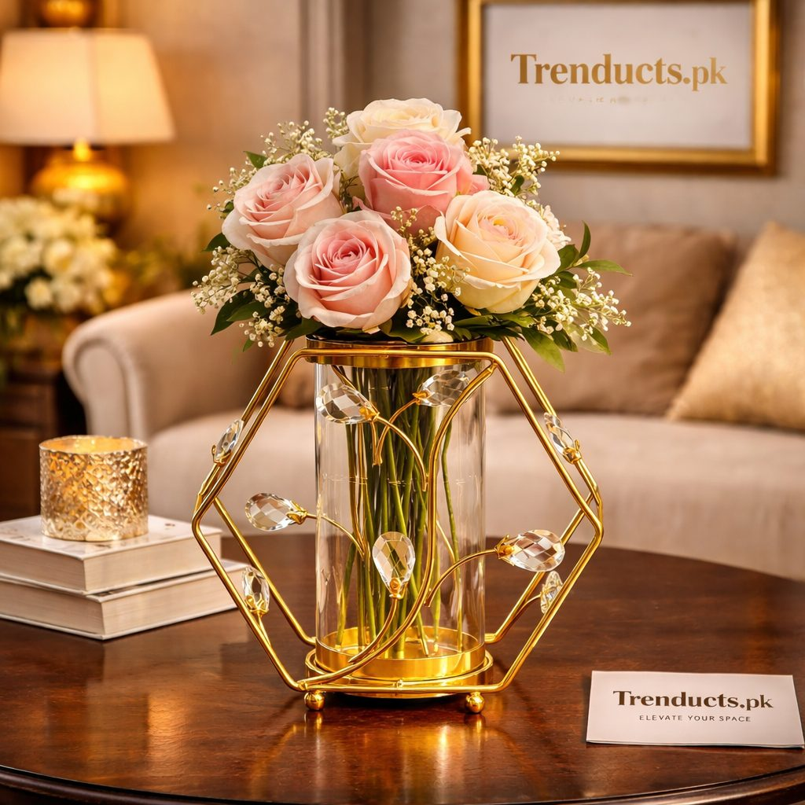
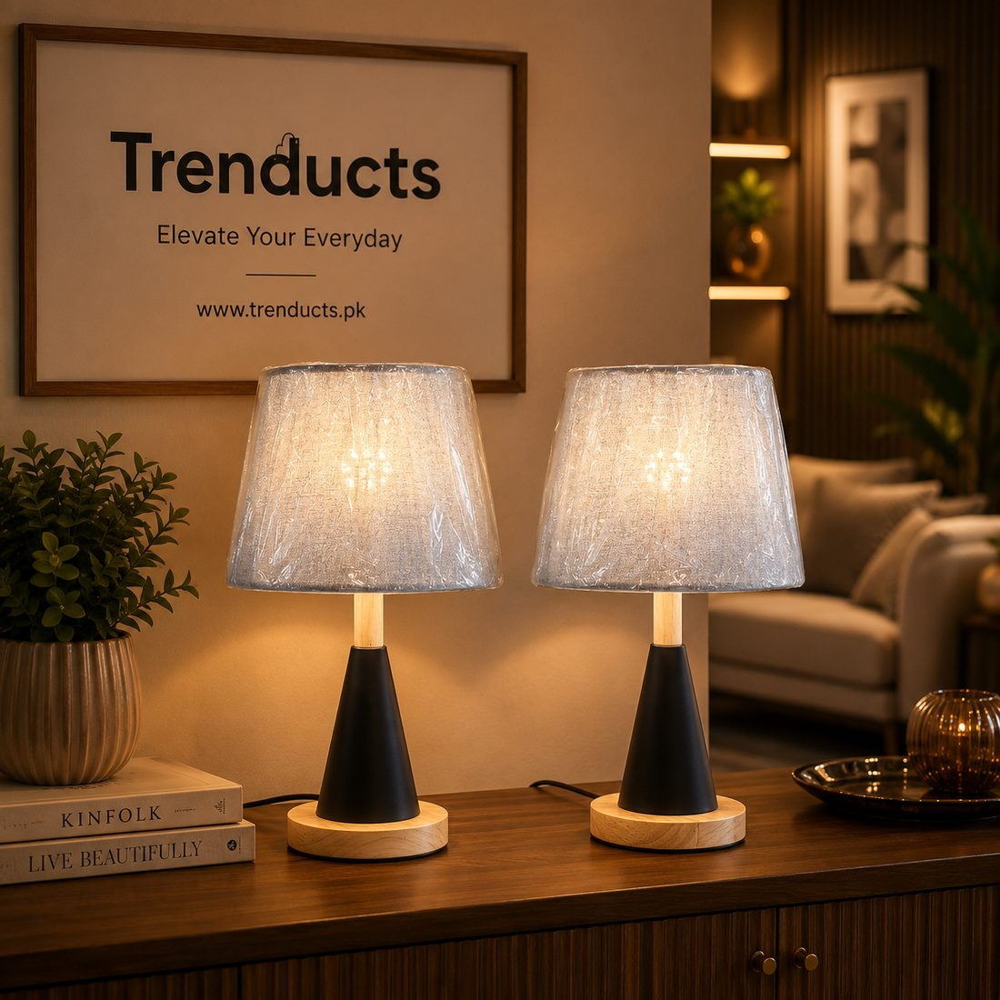

A practical guide to choosing housewarming gifts for family and friends in Pakistan, from decor and lighting to kitchen essentials and etiquette.



Moving into a new home is a big milestone, whether it is a first flat after marriage, a family house built after years of saving or a move to a new city. In Pakistan, friends and relatives often visit soon after the move, and many families hold a small gathering or a Quran khwani to bless the new home. Arriving with a thoughtful gift is part of the tradition.
Choosing the right gift is not always easy. You do not know the new decor, and you do not want to add clutter. Here are ideas that work.
Sweets from a good mithai shop remain a classic, as do dry fruits and a basket of fresh fruit. These are always appreciated and never clash with anyone's decor. Many families also gift a framed Ayat ul Kursi or calligraphy piece for the entrance, which carries blessings and meaning.
If you want to give something lasting, choose decor that is versatile rather than bold:
Neutral colours like white, gold, natural wood and clear glass are the safest choices.
A new kitchen often lacks the small things. Useful gifts include a set of glass food containers, a good chopping board, a spice rack, a dinner set for a newly married couple or a thermal flask for chai. These may seem ordinary, but they get used every day.
If you do not know the family's taste, consumable gifts like sweets, dry fruits or a nice tea set are safe. You could also ask a close family member what the home still needs. Many people appreciate practical help more than decor.
Wrap the gift neatly, add a card with a short message wishing barakah in the new home, and write your name clearly so the family knows who gave what. If delivering a fragile item like a vase, pack it carefully.
Visit only after the family has had a few days to settle, unless invited earlier. Keep visits short in the first weeks, when they are still unpacking. Offer help rather than just admiring the house; carrying boxes or bringing a meal can be the most appreciated gift of all.
If you cannot visit, ordering a gift for delivery is a thoughtful option. Send a message or call to let them know it is coming.
If several cousins or colleagues want to give something together, pooling money allows a more substantial gift, such as a set of lamps, a dinner set or a large decor piece the family would not buy for themselves. Agree on the budget and one person to choose and deliver it, and sign the card from everyone. Group gifts also avoid the problem of a new home receiving five identical vases.
For vases, lamps, candle holders and kitchen essentials, www.trenducts.pk offers a wide selection with delivery across Pakistan, which makes it easy to send a gift to a different city.
The best housewarming gifts show that you thought about the people and their new space. Whether it is a box of mithai or a beautiful vase, what matters is the wish behind it: that the new home brings peace, happiness and barakah.